Data-based Numerical Simulation of Buoyant Jet Flow
Defense script, 12 slides, about 15 minutes. Open the deck. Download everything for offline use (ZIP, extract, then open index.html).
Whole talk
1. Introduction 0:35
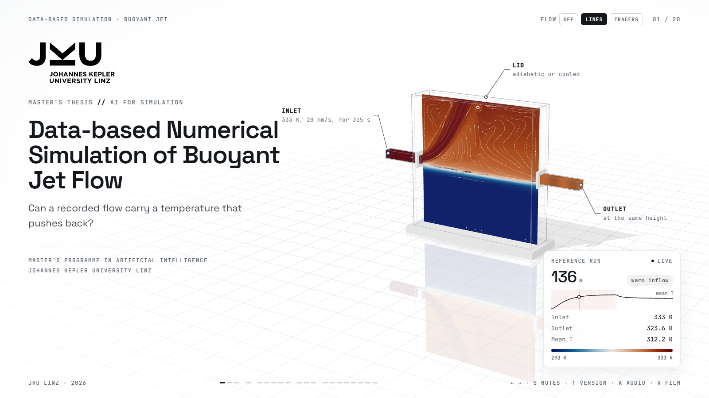
Good morning, and thank you for being here.
Today I will present my master's thesis, called Data-based Numerical Simulation of Buoyant Jet Flow.
The main idea is simple. We record a flow once and then reuse its recorded motion to simulate temperature transport.
But there is one problem. Temperature can change the density of the fluid, and this can also change the flow itself.
Alur cerita. Salam → nama → judul → ide utama (rekam sekali, pakai ulang) → masalah (suhu mengubah densitas dan aliran).
- Greeting: Good morning.
- Name: your own name.
- Title: Data-based Numerical Simulation.
- Main idea: record flow once, reuse it.
- Problem: temperature changes density and flow.
2. The Central Problem 1:10
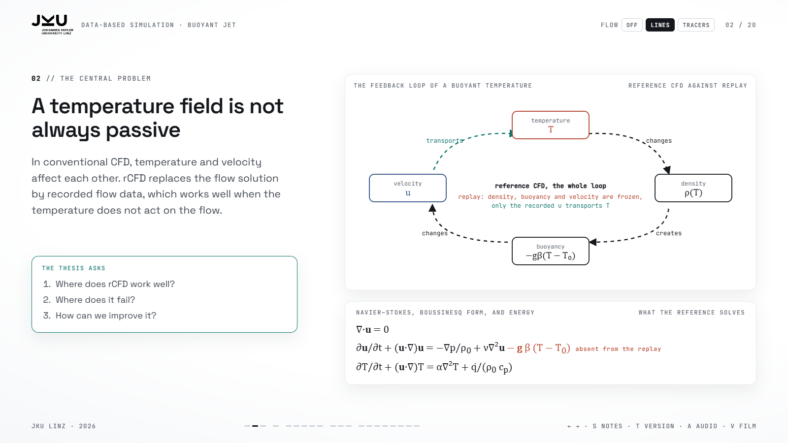
In conventional CFD, temperature and velocity affect each other.
First, temperature changes the density. This creates buoyancy forces, which change the fluid velocity. Then, the new velocity transports the temperature again.
This creates a feedback loop and makes the simulation more difficult.
To make the simulation faster, we can use Recurrence CFD, or rCFD. Instead of solving the complete flow again and again, rCFD uses previously recorded flow data to transport temperature.
This works well when temperature does not affect the flow. However, when temperature changes the flow, the recorded motion may no longer represent the real physical behaviour.
Therefore, my thesis investigates three main questions. Where does rCFD work well? Where does it fail? And how can we improve it?
Alur cerita. Record → Temperature → Density → Buoyancy → Velocity → Feedback → rCFD → Limitation → Improvement. Tekankan kalimat "However, when temperature changes the flow…".
- Coupling: temperature and velocity affect each other.
- Density: temperature changes density.
- Buoyancy: changes velocity.
- Feedback: velocity transports temperature again.
- Solution: rCFD uses recorded flow data.
- Limitation: recorded motion may not represent real flow.
- Thesis: where it works, where it fails, how to improve.
3. How Recurrence CFD Works 1:15
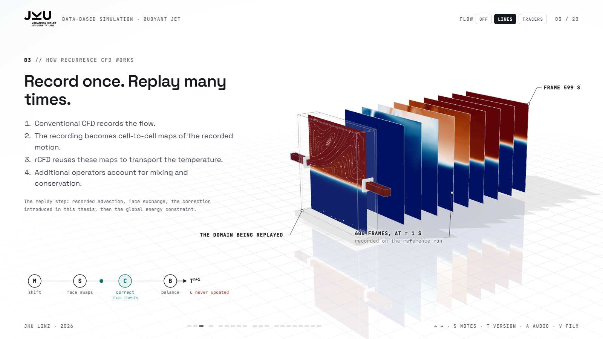
Let me briefly explain the method.
First, we run a normal CFD simulation and record how the fluid moves between cells. This motion is stored in cell-to-cell maps.
During the replay, these maps transport the temperature without solving the momentum equations again.
However, the recorded maps do not capture all the mixing. Therefore, the standard method adds face exchange between neighbouring cells. Then, global conservation corrects the total energy balance.
In my thesis, I add one more correction step between face exchange and global conservation. This step reduces numerical diffusion and keeps the temperature within local limits.
This is the main idea of my method.
Alur cerita. Rekam aliran → peta antar-sel (cell-to-cell maps) → replay tanpa persamaan momentum → face exchange menambah pencampuran → konservasi global menjaga energi → langkah koreksi saya di antara keduanya.
- Record: normal CFD, fluid motion between cells.
- Cell-to-cell maps: replay without momentum equations.
- Face exchange: adds the missing mixing.
- Global conservation: total energy balance.
- My step: correction between face exchange and conservation.
- Goal: less numerical diffusion, temperature within local limits.
4. Study Design 1:15
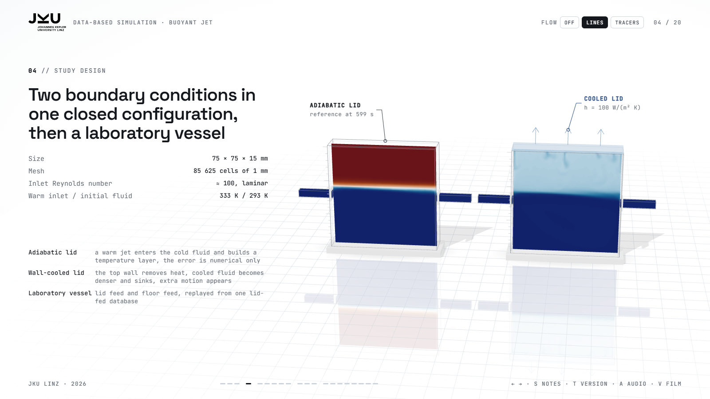
I started with a small numerical setup.
The size is 75 by 75 by 15 millimetres, with 85,625 cells. Each cell is one millimetre in size.
The inlet Reynolds number is around 100, so the flow is laminar. This helps us study the replay errors without adding turbulence as another problem.
I tested two boundary conditions. First, the adiabatic case. A warm jet enters the cold fluid and creates a temperature layer.
Second, the wall-cooled case. The top wall removes heat. The fluid becomes colder and denser, so it sinks and creates additional motion.
By comparing these two cases, we can separate numerical errors from errors caused by missing motion.
Finally, I tested the correction methods in a laboratory vessel.
Alur cerita. Setup kecil dan laminar → dua kondisi batas (adiabatik, didinginkan) → membandingkan keduanya memisahkan galat numerik dari gerak fisik yang hilang → lalu bejana laboratorium.
- Small setup: 75 × 75 × 15 mm, 85,625 cells of 1 mm.
- Re ≈ 100: laminar, no turbulence model.
- Adiabatic lid: warm jet builds a temperature layer.
- Wall-cooled lid: cold fluid sinks, extra motion.
- Comparison: numerical error vs missing motion.
- Then: laboratory vessel.
5. Where the Standard Replay Breaks Down 1:30
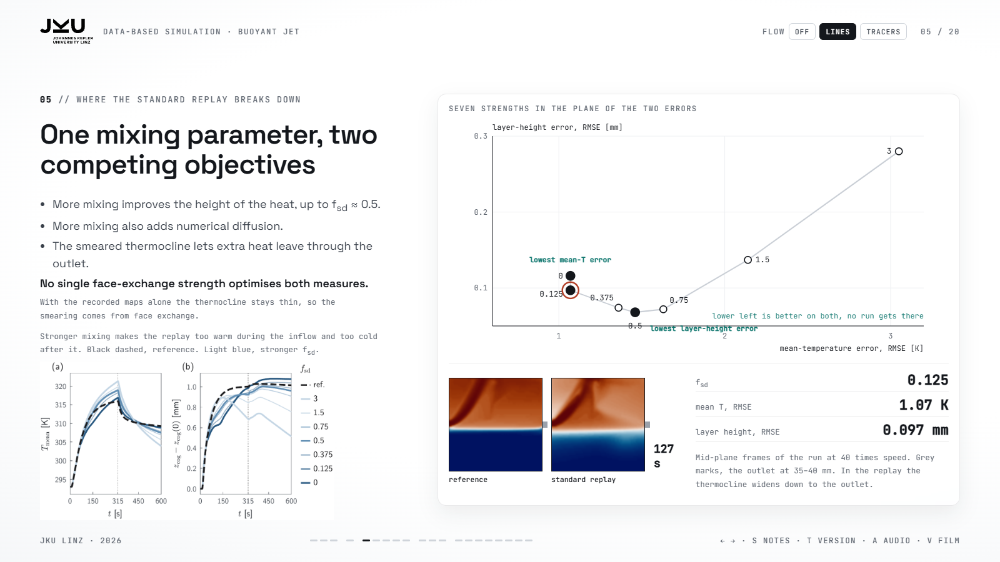
Now, let us look at the standard replay.
The first problem is numerical diffusion. It makes the thermocline much thicker than in the reference simulation.
This is not only a visual problem. It also changes the energy distribution and the heat leaving the system.
The outlet is located just below the thermocline. Because of numerical diffusion, warm fluid spreads across this boundary. As a result, the outlet removes heat from the wrong region.
I tested seven different mixing strengths. The results show a clear trade-off.
The mean-temperature RMSE is lowest at 1.07 kelvin, with little or no extra mixing. However, the centre-of-gravity error is lowest at a mixing strength of around 0.5.
So, increasing the mixing improves one measure but makes the other worse.
This means that the standard replay has no single best mixing parameter. This answers my first research question.
Alur cerita. Difusi menebalkan termoklin → panas menyebar melewati batas → outlet mengambil panas dari daerah yang salah → tujuh variasi pencampuran menunjukkan trade-off → tidak ada satu parameter terbaik.
- Problem: numerical diffusion.
- Effect: thermocline becomes too thick.
- Outlet: below the thermocline, removes heat from the wrong region.
- Seven tests: different mixing strengths.
- Trade-off: RMSE best at 1.07 K, centre-of-gravity error best near 0.5.
- Conclusion: no single best mixing parameter.
6. The Extended Replay 1:35
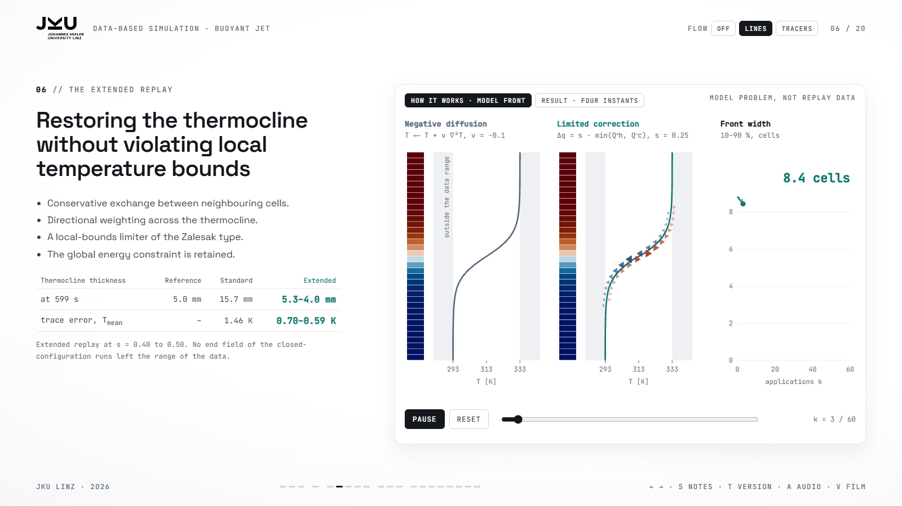
To solve this problem, I developed an additional correction step.
The idea is to move heat back across the thermocline in a controlled way.
This correction has three important features. First, it is conservative. This means that the total energy of two neighbouring cells stays the same after the exchange.
Second, it is directionally weighted. It mainly corrects heat transfer across the thermocline, instead of treating all cell faces equally.
Third, it uses a local-bounds limiter. This prevents the corrected temperature from going outside the range of the neighbouring data.
The results are promising. The reference thermocline is about 5 millimetres thick. The standard replay produces 15.7 millimetres. With my correction, the thickness decreases to between 5.3 and 4.0 millimetres.
The trace error also decreases from 1.46 kelvin to as low as 0.59 kelvin.
Importantly, in the closed-configuration runs, the correction does not produce temperatures outside the data range.
This answers my second research question.
Alur cerita. Masalah replay → tambah koreksi → tiga fitur (Conservative → Directional → Local bounds) → ketebalan termoklin membaik → trace error menurun → batas data tetap terjaga.
- Correction: move heat back across the thermocline.
- Conservative: energy of two neighbouring cells stays the same.
- Directional: mainly corrects across the thermocline.
- Local bounds: temperature stays in the neighbouring data range.
- Results: 15.7 mm → 5.3–4.0 mm, trace error 1.46 K → 0.59 K.
- Conclusion: answers research question 2.
7. The Limit: Missing Motion 1:20
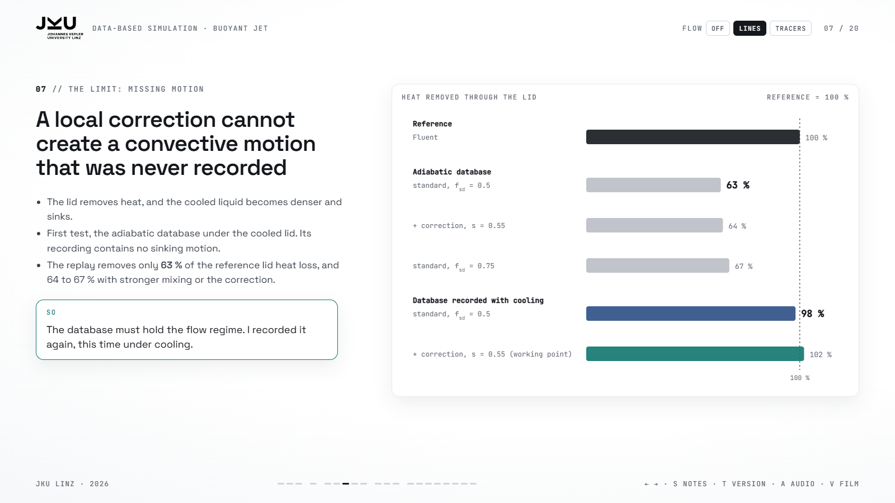
Next, I applied the method to the wall-cooled case.
Here, the lid removes heat from the fluid. The cooled fluid becomes denser and sinks. This creates additional motion above the thermocline.
In the first test, I used the adiabatic database for the wall-cooled case. The replay can still remove heat through the lid. However, the reference flow has cold fluid moving downward. This motion is missing from the adiabatic database.
As a result, the replay captures only 63 per cent of the heat lost through the lid. Stronger mixing or the correction increases this only to 64 to 67 per cent.
This leads to the main limitation of the method. A local correction cannot create motion that was never recorded. The database must hold the flow regime, so I recorded it again, this time under cooling.
Alur cerita. Tutup mendinginkan fluida → fluida dingin tenggelam → database adiabatik tidak punya gerak ke bawah itu → panas keluar hanya 63 % (64–67 % dengan pencampuran atau koreksi) → koreksi lokal tidak bisa membuat gerak yang tidak terekam → rekam ulang database saat didinginkan.
- Wall cooling: lid removes heat, cold fluid sinks.
- First test: adiabatic database used for wall-cooled flow.
- Missing motion: cold fluid should move downward.
- Heat loss: 63 %, only 64–67 % with stronger mixing or correction.
- Conclusion: correction cannot create motion that was never recorded.
- Bridge: record the database again under cooling.
8. The Wall-Cooled Case 1:35
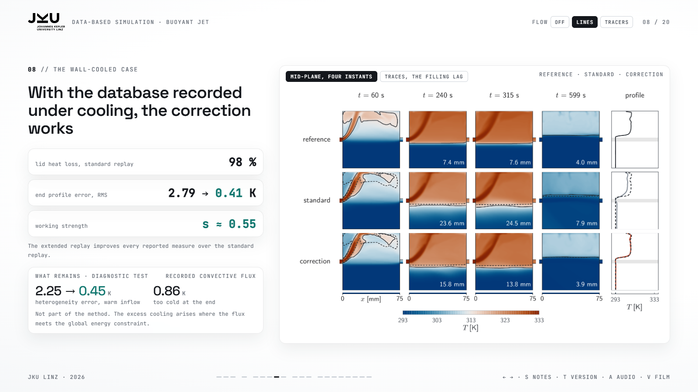
With the database recorded under the same wall-cooled condition, the standard replay captures about 98 per cent of the heat lost through the lid. However, this does not mean that the temperature field is correct.
The thermocline is still too diffuse, and the heat distribution is different from the reference. The error in the final centre-line temperature profile is 2.79 kelvin.
With the correction, all reported measures improve. The final profile error decreases to 0.41 kelvin. The selected correction strength is around 0.55.
One error still remains. Even with this database, the replayed layers separate too slowly during warm inflow. In a diagnostic test, I added the recorded convective heat flux from the reference. This is only a diagnostic test, not part of my proposed method.
The heterogeneity error decreases from 2.25 to 0.45 kelvin. However, the final temperature becomes 0.86 kelvin too cold. This happens because the recorded heat flux interacts with the global energy constraint.
So the correction works with a cooled wall, as long as the database represents the same flow regime. And correcting numerical diffusion is not enough when the database lacks the relevant motion.
Alur cerita. Database direkam saat didinginkan → replay standar menangkap 98 % kehilangan panas tetapi profil suhu masih salah (2,79 K) → koreksi s sekitar 0,55 memperbaiki semua ukuran (0,41 K) → sisa: lapisan memisah terlambat saat pengisian → uji diagnostik fluks: 2,25 → 0,45 K, tetapi akhir 0,86 K terlalu dingin. Tegaskan: fluks bukan bagian metode.
- Same database: recorded under wall-cooled conditions.
- Standard replay: 98 % heat loss, temperature field still inaccurate.
- Correction: error 2.79 K → 0.41 K, s ≈ 0.55.
- Remaining: layers separate too slowly during inflow.
- Diagnostic flux: heterogeneity 2.25 → 0.45 K, end 0.86 K too cold.
- Conclusion: works when the database holds the flow regime.
9. Application to a Through-Flow Vessel 1:30
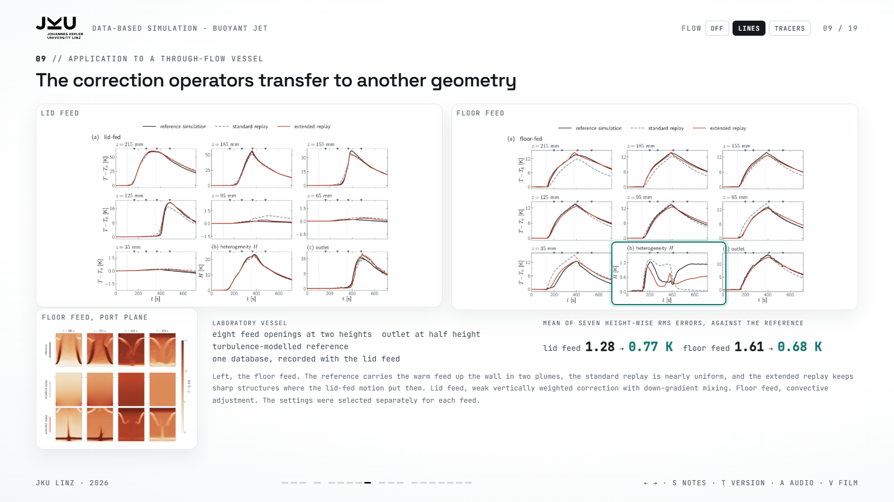
Finally, I tested the correction methods in a different geometry, a through-flow vessel based on a laboratory setup.
The vessel has eight feed openings at two different heights and one outlet at half height. The reference simulations use a turbulence model.
The important point is that I used only one database. It was recorded during the lid-fed case. I then tested two configurations, lid-fed and floor-fed.
Compared with their reference simulations, the extended replay gives better results in both cases. For the lid-fed case, the mean RMS error decreases from 1.28 to 0.77 kelvin. For the floor-fed case, it decreases from 1.61 to 0.68 kelvin.
However, the two cases need different correction settings. The lid-fed case needs a weak correction with down-gradient mixing under the lid. The floor-fed case needs convective adjustment, because warm fluid enters below the colder fluid.
This means that the correction methods can be transferred to a new configuration, but their settings must be adjusted.
Also, the floor-fed replay still cannot reproduce motion that is missing from the lid-fed database.
Alur cerita. Geometri baru → satu database umpan tutup → dua uji → keduanya membaik → setelan berbeda per umpan → gerak yang tidak terekam tetap tidak bisa dibuat.
- New geometry: through-flow vessel.
- Structure: eight feed openings, two heights, outlet at half height.
- One database: recorded from the lid-fed case.
- Two tests: lid-fed and floor-fed.
- Improved: 1.28 → 0.77 K and 1.61 → 0.68 K.
- Different settings: weak correction (lid), convective adjustment (floor).
- Limitation: cannot reproduce motion missing from the database.
10. Computational Cost 0:55
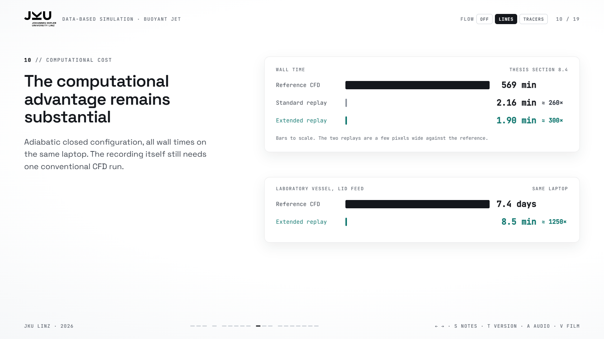
Besides accuracy, computational cost is also important.
In the adiabatic closed case, the reference simulation took 569 minutes. The standard replay took only 2.16 minutes. The extended replay took about 1.9 minutes.
This means that the standard replay is about 260 times faster. The extended replay is about 300 times faster.
So, the correction keeps the main speed advantage of recurrence CFD.
However, this advantage applies to repeated replays. We still need one conventional CFD simulation to create the database.
Alur cerita. Referensi sangat lama → replay jauh lebih cepat → koreksi tetap mempertahankan kecepatan → pembuatan database tetap butuh CFD biasa.
- Computational cost: selain akurasi, waktu penting.
- Reference: 569 min.
- Standard replay: 2.16 min, about 260×.
- Extended replay: 1.9 min, about 300×.
- Conclusion: still fast, database needs one CFD run.
11. Contributions and Limitations 1:10
To summarise, this thesis has five main findings.
First, the standard replay has a trade-off between energy retention and temperature stratification.
Second, my correction reduces numerical diffusion while keeping the temperature within local limits.
Third, the database must represent the correct flow regime.
Fourth, local corrections cannot replace motion that is missing from the database.
Fifth, the correction methods can be used in other configurations, but their settings must be adjusted.
There are also some limitations. The method still depends on the recorded motion. The correction strength is not yet selected automatically. Also, the laboratory comparison has some errors in the reference simulations themselves.
Therefore, the results show improvements compared with the numerical references, but they do not prove that the method is accurate for every situation.
Alur cerita. Lima kata: Trade-off – Correction – Database – Missing Motion – Transfer. Tiga batasan: Recorded Motion – Manual Settings – Reference Errors.
- Trade-off: energy retention vs stratification.
- Correction: less diffusion, local limits respected.
- Database: must match the flow regime.
- Missing motion: not replaced by local correction.
- Transfer: works elsewhere, settings change.
- Limits: recorded motion, manual settings, reference errors.
12. Conclusion 0:45
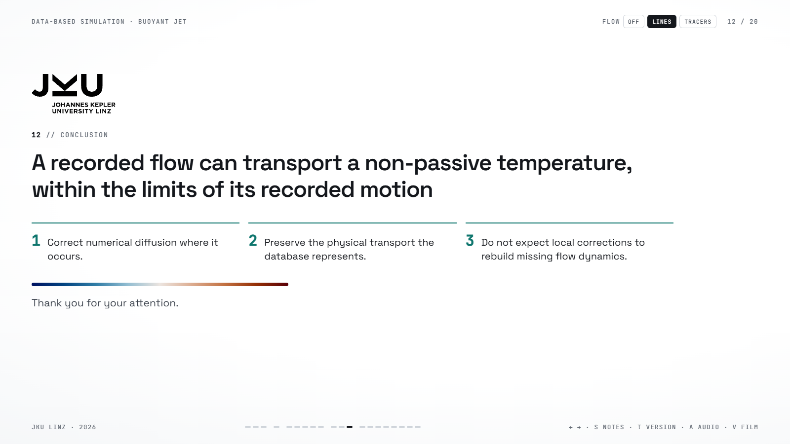
So, can a recorded flow carry temperature that also changes the flow? My results show that it can, under certain conditions.
A bounded correction can improve the thermocline and the temperature distribution.
However, the database must represent the correct flow regime. If the motion changes, local corrections alone cannot reproduce that missing motion.
This is the main finding of my thesis. The accuracy of recurrence CFD depends not only on how we correct the replay, but also on what physical information we record.
Thank you for your attention. I will be happy to answer your questions.
Alur cerita. Pertanyaan → ya, dengan syarat → koreksi membantu → database harus sesuai → gerak yang hilang tidak bisa dibuat → akurasi bergantung pada koreksi dan informasi yang direkam.
- Main question: can a recorded flow carry temperature that changes the flow?
- Answer: yes, under certain conditions.
- Correction: improves thermocline and temperature distribution.
- Requirement: database must represent the correct flow.
- Limitation: cannot recreate missing motion.
- Final message: accuracy depends on correction and recorded information.